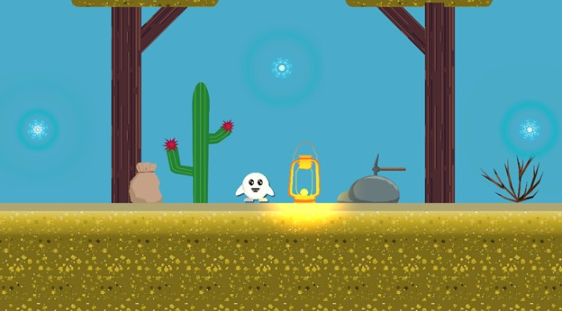
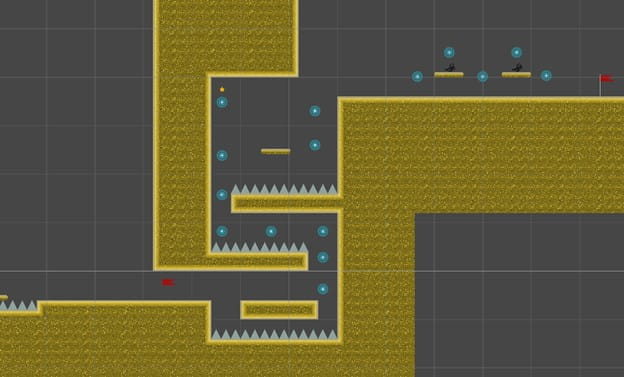

| Capstone Progress Week 11 |
This was a bit of an odd week for me. With our plan to work on two levels per week, I started to feel a bit rushed.
I had a few assignments from other classes to work on, alongside finishing the second boss level.
I played through what we have so far and felt like there were so many things we could have improved on or reworked to be better.
Our mentors have mentioned this a couple of times, referring to it as technical debt.
They said that this is something that happens in any project and that we should see it as a learning experience.
I was really starting to enjoy making little decorations for the levels, so I created a lantern, pickaxe, rock, bag, and cactus sprite.
Not as good as Joana’s art, but I’m happy with how they turned out. Speaking of, we also implemented the new enemy sprites.
A lot better than our temporary sprites made in paint.

After implementing these decorations around the level, I got back to work on the boss level.
In the original concept for the boss level, I wanted to have a survival section where the player would ride an elevator to the town and would have to avoid mobs that would spawn on each side.
I scrapped this idea pretty quickly since it slowed down the pace of the game too much.
I swapped it out for a section where the player needed to launch himself around some spikes.
I found this to be a lot more fun and challenging.

That weekend, our school hosted an open house.
James had our lab room open so that people who were interested in the course could come and see what it was all about.
I decided to go since I could get some feedback on the game from people outside of the course, and get some work done at the same time.
I met this one student who was really interested in game development and wanted to try out our game.
I got a build setup and let him play through what we had. He really enjoyed it and offered some great feedback.
I really didn’t get too much done, but I did implement a jump buffering mechanic that gives the player a bit more leniency when timing their jumps after being in the air.
Finally, I tried implementing the boss into its temporary room. Turns out, the boss does not work very well outside of the test scene. I tried my best to fix it, but to no avail. I decided to send over the build to Hyangsu, the creator of the AI, to see if she could help me out with it. Hopefully, by the middle of next week, we should be done with the desert levels. At our current pace, I feel like we may not have time to finish the next two levels. I have suggested to the others that we just make the one boss level for our final area. They seem to agree with this move, as it will give us more time to polish up the last boss and fix more bugs in the previous ones. |
|---|